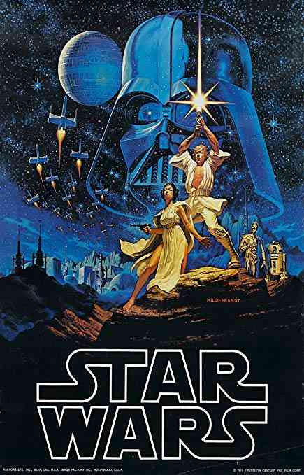
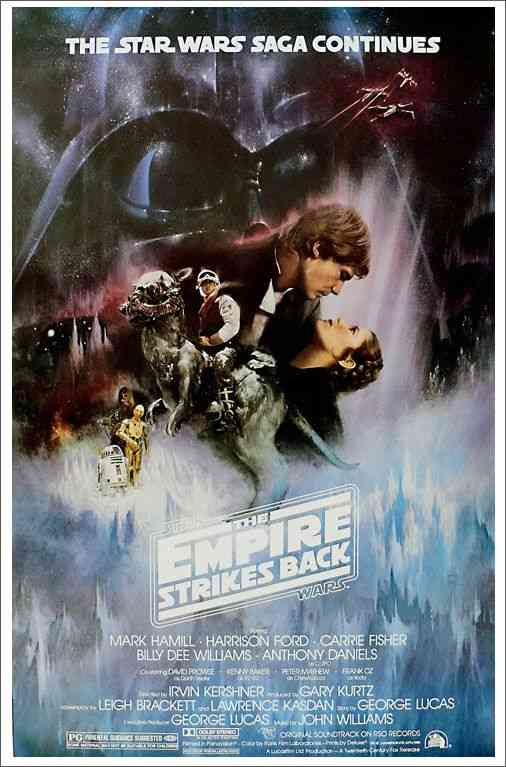
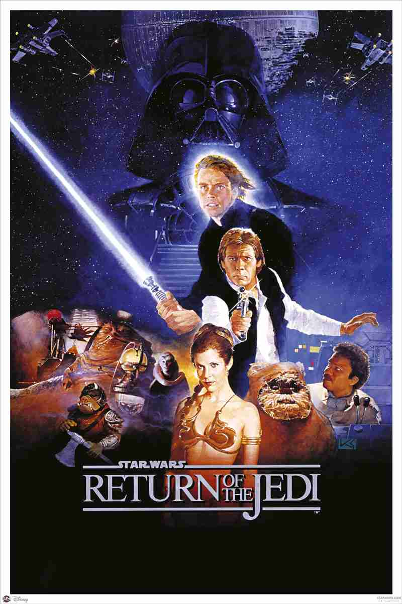
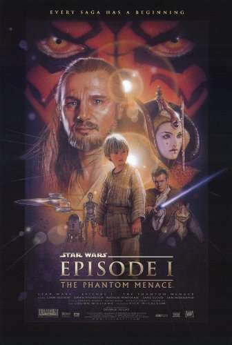
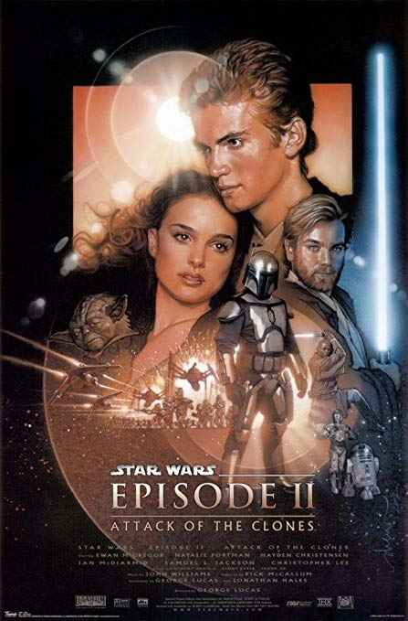
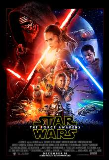
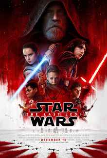
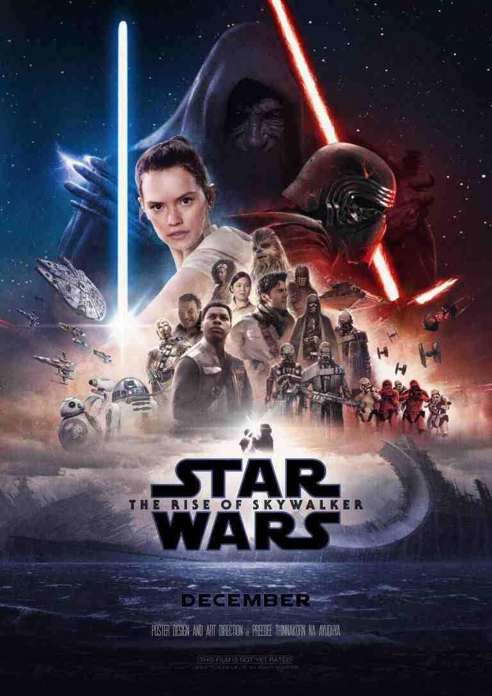

- 
A princesa Leia é mantida refém pelas forças imperiais comandadas por Darth Vader. Luke Skywalker e o capitão Han Solo precisam libertá-la e restaurar a liberdade e a justiça na galáxia.
Diretor: George Lucas
Elenco: Harrison Ford, Mark Hamill, Carrie Fisher, Alec Guiness, Anthony Daniels, Kenny Baker, Peter Mayhew, Peter Cushing
- 
Yoda treina Luke Skywalker para ser um cavaleiro Jedi. Han Solo corteja a Princesa Leia enquanto Darth Vader retorna para combater as forças rebeldes que tentam salvar a galáxia.
Diretor: Irvin Kershner
Elenco: Harrison Ford, Mark Hamill, Carrie Fisher, David Prowse, Anthony Daniels, Kenny Baker, Peter Mayhew, Frank Oz
- 
Uma nova Estrela da Morte está sendo construída e supervisionada pelo imperador. Han Solo e a Princesa Leia são libertados das mãos de Jabba por Luke Skywalker, que só se tornará um Jedi quando destruir Darth Vader, que deseja atraí-lo para o lado sombrio da Força.
Diretor: Richard Marquand
Elenco: Harrison Ford, Mark Hamill, Carrie Fisher, Billy Dee Williams, David Prowse, Anthony Daniels, Kenny Baker, Peter Mayhew
- 
Obi-Wan e seu mentor embarcam em uma perigosa aventura na tentativa de salvar o planeta das garras de Darth Sidious. Durante a viagem, eles conhecem um habilidoso menino e decidem treiná-lo para se tornar um Jedi. Mas o tempo irá revelar que as coisas nem sempre são o que aparentam ser.
Diretor: George Lucas
Elenco: Liam Neeson, Ewan McGregor, Natalie Portman, Jake Lloyd, Ian McDiarmid, Ahmed Best, Anthony Daniels, Kenny Baker
- 
Tentado por promessas de poder, Anakin Skywalker se aproxima de Darth Sidious e participa de um plano para acabar com os Cavaleiros Jedi.
Diretor: George Lucas
Elenco: Ewan McGregor, Natalie Portman, Hayden Christensen, Samuel L. Jackson, Ian McDiarmid, Christopher Lee, Jimmy Smits, Anthony Daniels

As Guerras Clônicas estão em pleno andamento e Anakin Skywalker mantém um elo de lealdade com Palpatine, ao mesmo tempo em que luta para que seu casamento com Padmé Amidala não seja afetado por esta situação. Seduzido por promessas de poder, Anakin se aproxima cada vez mais de Darth Sidious até se tornar o temível Darth Vader. Juntos eles tramam um plano para aniquilar de uma vez por todas com os cavaleiros jedi.
Diretor: George Lucas
Elenco: Ewan McGregor, Natalie Portman, Hayden Christensen, Samuel L. Jackson, Ian McDiarmid, Christopher Lee, Anthony Daniels, Kenny Baker
- 
A queda de Darth Vader e do Império levou ao surgimento de uma nova força sombria: a Primeira Ordem. Eles procuram o jedi Luke Skywalker, desaparecido. A resistência tenta desesperadamente encontrá-lo antes para salvar a galáxia.
Diretor: J. J. Abrams
Elenco: Daisy Ridley, John Boyega, Adam Driver, Harrison Ford, Oscar Isaac, Carrie Fisher, Mark Hamill, Lupita Nyong'o
- 
A tranquila e solitária vida de Luke Skywalker sofre uma reviravolta quando ele conhece Rey, uma jovem que mostra fortes sinais da Força. O desejo dela de aprender o estilo dos Jedi força Luke a tomar uma decisão que mudará sua vida para sempre. Enquanto isso, Kylo Ren e o General Hux lideram a Primeira Ordem para um ataque total contra Leia e a Resistência pela supremacia da galáxia.
Diretor: Rian Johnson
Elenco: Daisy Ridley, John Boyega, Adam Driver, Oscar Isaac, Carrie Fisher, Mark Hamill, Kelly Marie Tran, Andy Serkis
- 
Término da nova trilogia Guerra Nas Estrelas, concluindo as tramas de O Despertar da Força (2015) e Os Últimos Jedi (2017). Lançamento em dezembro de 2019.
Diretor: Rian Johnson
Elenco: Daisy Ridley, John Boyega, Adam Driver, Oscar Isaac, Carrie Fisher, Mark Hamill, Billy Dee Williams, Keri Russel